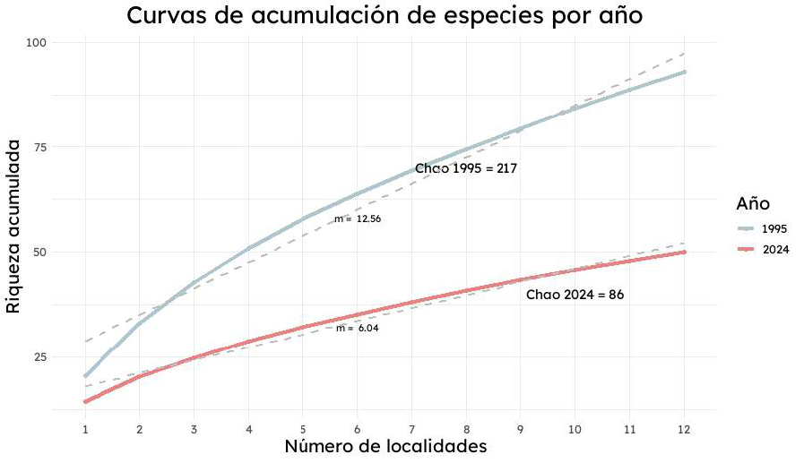
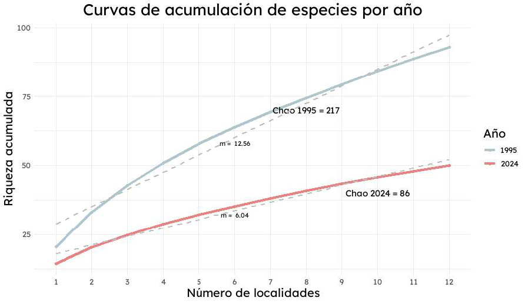
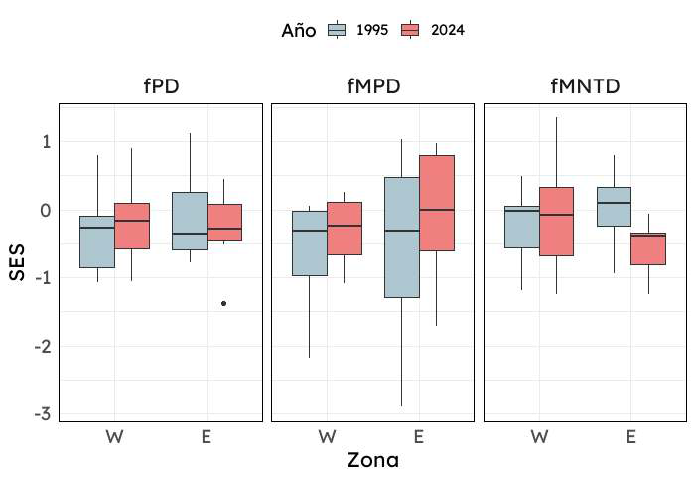
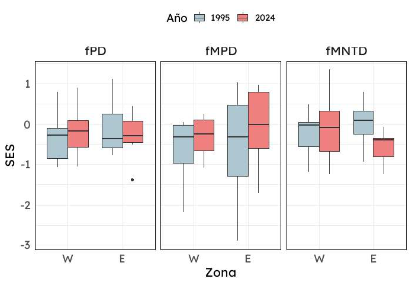

 


El análisis completo se realizó en R utilizando tres scripts principales. Haz clic en cada recuadro para ver el código:
Este script analiza la diversidad taxonómica (TD) mediante el cálculo de riqueza de especies, análisis NMDS, beta diversidad y curvas de acumulación.
# ============================================================================
# TAXO.R - ANÁLISIS DE DIVERSIDAD TAXONÓMICA
# ============================================================================
# Este script realiza el análisis completo de diversidad taxonómica (TD)
# Compara la riqueza de especies entre 1995 y 2024
# Calcula beta diversidad taxonómica y genera visualizaciones
# ============================================================================
# --- CONFIGURACIÓN INICIAL ---
setwd('F:/TFM')
library(readxl)
library(dplyr)
library(ggplot2)
library(vegan)
library(BAT)
library(showtext)
# Cargar datos
arañas <- read_excel("arañas.xlsx")
# Limpiar y preparar datos
arañas <- arañas[, !colnames(arañas) %in% c("Cod_DZUL", "Año", "Ordenar","X","Y",
"Camp","Localidad","Código_95","Fecha",
"Trampa","Código_muestra","Orden",
"Familia","Género","Especie",
"Determinador","Observaciones")]
arañas <- arañas %>%
select(Código_localidad, Año2, Taxon, N_exx., Muestreo) %>%
rename(Año = Año2)
arañas$N_exx. <- as.numeric(arañas$N_exx.)
arañas <- arañas[complete.cases(arañas), ] # Eliminar filas con NA
# ============================================================================
# 1. ANÁLISIS DE RIQUEZA POR AÑO
# ============================================================================
# Compara la riqueza de especies entre 1995 y 2024
riqueza <- arañas %>%
filter(Año %in% c(1995, 2024)) %>%
group_by(Código_localidad, Año) %>%
summarise(riqueza = n_distinct(Taxon), .groups = "drop")
# Visualización: Boxplot de riqueza
font_add_google("Lexend", "lexend")
showtext_auto()
ggplot(riqueza, aes(x = factor(Año), y = riqueza, fill = factor(Año))) +
geom_boxplot() +
labs(title = "Comparación de Riqueza entre 1995 y 2024",
x = "Año", y = "Riqueza", fill = "Año") +
scale_fill_manual(values = c("#AEC6CF", "#F08080")) +
theme_minimal() +
theme(text = element_text(family = "lexend"),
plot.title = element_text(size = 50, face = "bold"),
axis.title = element_text(size = 30),
axis.text = element_text(size = 40),
legend.title = element_text(size = 30),
legend.text = element_text(size = 25))
ggsave("boxplot_riqueza.png", width = 6, height = 4, dpi = 300)
# Modelo estadístico: GLM Poisson
riqueza$Año <- factor(riqueza$Año)
modelo_poisson <- glm(riqueza ~ Año, data = riqueza, family = poisson)
summary(modelo_poisson)
anova_result <- anova(modelo_poisson, test = "Chisq")
# ============================================================================
# 2. RIQUEZA POR AÑO Y TIPO DE MUESTREO
# ============================================================================
# Analiza diferencias entre métodos de muestreo (trampas vs. métodos activos)
riqueza_loc_muest <- arañas %>%
group_by(Código_localidad, Año, Muestreo) %>%
summarise(Riqueza = n_distinct(Taxon), .groups = "drop")
riqueza_loc_muest$Año <- as.factor(riqueza_loc_muest$Año)
ggplot(riqueza_loc_muest, aes(x = Muestreo, y = Riqueza, fill = Año)) +
geom_boxplot(lwd = 0.3, outlier.size = 0.7) +
labs(y = "Riqueza") +
scale_fill_manual(values = c("1995" = "#AEC6CF", "2024" = "#F08080")) +
theme_linedraw() +
theme(panel.grid = element_blank(),
axis.title.x = element_blank(),
text = element_text(family = "lexend"))
ggsave("riqueza_año_muest.png", width = 6, height = 4, dpi = 300)
# Modelo: Negative Binomial
library(MASS)
library(car)
library(DHARMa)
library(emmeans)
model_NB <- glm.nb(Riqueza ~ Año * Muestreo, data = riqueza_loc_muest, na.action = "na.omit")
summary(model_NB)
anova_am <- Anova(model_NB)
simulationOutputNB <- simulateResiduals(fittedModel = model_NB)
plot(simulationOutputNB)
marginal <- emmeans(model_NB, ~ Año * Muestreo)
pairs(marginal, adjust = "tukey")
# ============================================================================
# 3. ANÁLISIS NMDS (Non-Metric Multidimensional Scaling)
# ============================================================================
# Visualiza la similitud entre comunidades usando ordenación no métrica
# Preparar matriz de presencia/ausencia
arañas$localidad_año <- paste(arañas$Código_localidad, arañas$Año, sep = "_")
arañas_resumido <- arañas %>%
group_by(localidad_año, Taxon) %>%
summarise(N_exx. = sum(N_exx., na.rm = TRUE), .groups = "drop")
matriz_NMDS <- tidyr::pivot_wider(
data = arañas_resumido,
id_cols = localidad_año,
names_from = Taxon,
values_from = N_exx.,
values_fill = list(N_exx. = 0)
)
# Convertir a presencia/ausencia
NMDSPresAu <- matriz_NMDS %>%
mutate(across(-localidad_año, ~ ifelse(. > 0, 1, 0)))
NMDSPresAu <- NMDSPresAu[, -1]
# Calcular distancia de Jaccard y realizar NMDS
matriz_distancia <- vegdist(NMDSPresAu, method = "jaccard", na.rm = TRUE)
nmds_result <- metaMDS(matriz_distancia, k = 2, trymax = 100)
# Extraer coordenadas de los sitios
nmds_sites <- as.data.frame(scores(nmds_result, display = "sites"))
nmds_sites$localidad_año <- rownames(NMDSPresAu)
nmds_sites$localidad <- sub("_.*", "", nmds_sites$localidad_año)
nmds_sites$año <- sub(".*_", "", nmds_sites$localidad_año)
# Crear polígonos convexos (hull) por año
hull <- nmds_sites %>%
group_by(año) %>%
slice(chull(NMDS1, NMDS2))
# Visualización NMDS con polígonos
grafico <- ggplot(data = nmds_sites, aes(x = NMDS1, y = NMDS2)) +
geom_point(aes(color = localidad), size = 3, show.legend = FALSE) +
geom_polygon(data = hull, aes(group = año, fill = año), alpha = 0.3) +
labs(title = "NMDS por Año y Localidad",
x = "NMDS1", y = "NMDS2") +
theme_minimal() +
theme(text = element_text(family = "lexend", size = 12),
plot.title = element_text(hjust = 0.5, size = 18, family = "lexend")) +
scale_color_manual(values = c("1995" = "#AEC6CF", "2024" = "#F08080")) +
scale_fill_manual(values = c("1995" = "#AEC6CF", "2024" = "#F08080"))
print(grafico)
# ============================================================================
# 4. BETA DIVERSIDAD TAXONÓMICA
# ============================================================================
# Calcula beta diversidad total, reemplazamiento y riqueza
NMDSPresAu <- as.data.frame(NMDSPresAu)
rownames(NMDSPresAu) <- rownames(NMDSPresAu)
NMDSPresAu <- NMDSPresAu[, -1]
Tbeta <- beta(NMDSPresAu, func = "jaccard", abund = FALSE)
# Extraer componentes de beta diversidad
TBtotal <- as.matrix(Tbeta$Btotal)
TBtotal_df <- as.data.frame(TBtotal)
write.xlsx(TBtotal_df, "TBtotal.xlsx")
TBrepl <- as.matrix(Tbeta$Brepl)
TBrepl_df <- as.data.frame(TBrepl)
write.xlsx(TBrepl_df, "TBrepl.xlsx")
TBrich <- as.matrix(Tbeta$Brich)
TBrich_df <- as.data.frame(TBrich)
write.xlsx(TBrich_df, "TBrich.xlsx")
# ============================================================================
# 5. CURVAS DE ACUMULACIÓN DE ESPECIES
# ============================================================================
# Compara las curvas de acumulación entre 1995 y 2024
# Permite estimar la completitud del muestreo
arañas_95 <- arañas %>% filter(Año == 1995)
arañas_24 <- arañas %>% filter(Año == 2024)
# Crear matrices de especies por localidad
matriz_95 <- arañas_95 %>%
pivot_wider(names_from = Taxon, values_from = N_exx.,
values_fn = sum, values_fill = 0)
matriz_24 <- arañas_24 %>%
pivot_wider(names_from = Taxon, values_from = N_exx.,
values_fn = sum, values_fill = 0)
matriz_95 <- matriz_95[, -1]
matriz_24 <- matriz_24[, -1]
# Calcular curvas de acumulación
accum_95 <- specaccum(matriz_95, method = "random", permutations = 1000)
specpool_95 <- specpool(matriz_95)
completitud_95 <- specpool_95$Species / specpool_95$chao * 100
accum_24 <- specaccum(matriz_24, method = "random", permutations = 1000)
specpool_24 <- specpool(matriz_24)
completitud_24 <- specpool_24$Species / specpool_24$chao * 100
# Preparar datos para visualización
accum_95_df <- data.frame(Sites = accum_95$sites, Richness = accum_95$richness, SD = accum_95$sd)
accum_24_df <- data.frame(Sites = accum_24$sites, Richness = accum_24$richness, SD = accum_24$sd)
accum_95_df$Year <- "1995"
accum_24_df$Year <- "2024"
accum_df <- rbind(accum_95_df, accum_24_df)
# Calcular pendientes de las curvas
pendientes <- accum_df %>%
group_by(Year) %>%
do({
model <- lm(Richness ~ Sites, data = .)
pendiente <- coef(model)[2]
data.frame(pendiente)
})
# Visualización de curvas de acumulación
accum_df$Sites <- as.factor(accum_df$Sites)
ggplot(accum_df, aes(x = Sites, y = Richness, color = Year, group = Year)) +
geom_point() +
geom_line(size = 1.5) +
scale_color_manual(values = c("1995" = "#AEC6CF", "2024" = "#F08080")) +
annotate("text", x = 8, y = 70,
label = paste("Chao 1995 =", round(specpool_95$chao)),
col = "black", size = 4, family = "lexend") +
annotate("text", x = 10, y = 40,
label = paste("Chao 2024 =", round(specpool_24$chao)),
col = "black", size = 4, family = "lexend") +
labs(title = "Curvas de acumulación de especies por año",
x = "Número de localidades",
y = "Riqueza acumulada",
color = "Año") +
theme_minimal() +
theme(text = element_text(family = "lexend", size = 10),
plot.title = element_text(hjust = 0.5, size = 20, family = "lexend"),
axis.title = element_text(size = 15, family = "lexend"),
axis.text = element_text(size = 10, family = "lexend"),
legend.title = element_text(size = 15, family = "lexend"),
legend.text = element_text(size = 10, family = "lexend")) +
scale_x_discrete(breaks = 1:12) +
geom_smooth(method = "lm", aes(group = Year), se = FALSE,
linetype = "dashed", color = "grey", size = 1) +
geom_text(data = pendientes,
aes(x = 6, y = ifelse(Year == "1995", 58, 32),
label = paste("m = ", round(pendiente, 2))),
size = 3, color = "black", family = "lexend", inherit.aes = FALSE)
ggsave("curvas.png", width = 20, height = 20, units = "cm")
# ============================================================================
# FIN DEL SCRIPT TAXO.R
# ============================================================================Este script analiza la diversidad filogenética (PD) utilizando árboles filogenéticos reconstruidos, calculando PD, MPD, MNTD y beta diversidad filogenética.
# ============================================================================
# FILO.R - ANÁLISIS DE DIVERSIDAD FILOGENÉTICA
# ============================================================================
# Este script realiza el análisis completo de diversidad filogenética (PD)
# Utiliza árboles filogenéticos reconstruidos para analizar relaciones evolutivas
# Calcula PD, MPD, MNTD y beta diversidad filogenética
# ============================================================================
setwd("F:/TFM")
library(readxl)
library(dplyr)
library(ape)
library(phytools)
library(picante)
library(ggplot2)
library(BAT)
library(showtext)
# --- PREPARACIÓN DE DATOS DE COMUNIDAD ---
arañas <- read_excel("arañas.xlsx")
arañas <- arañas %>%
dplyr::select(Código_localidad, Año2, Taxon, N_exx., Muestreo) %>%
dplyr::rename(Año = Año2)
arañas$N_exx. <- as.numeric(arañas$N_exx.)
arañas <- arañas[complete.cases(arañas), ]
# Crear matriz de abundancia
matrizab <- arañas %>%
dplyr::group_by(Código_localidad, Taxon, Año) %>%
dplyr::summarise(Abundance = sum(N_exx.))
matrizab <- matrizab[complete.cases(matrizab), ]
# Limpiar nombres de taxones para coincidir con el árbol filogenético
matrizab$Taxon <- gsub("\\(|\\)", "", matrizab$Taxon)
matrizab$Taxon <- gsub(" ", "_", matrizab$Taxon)
# Crear matriz de presencia/ausencia
matrizab$LocAño <- paste(matrizab$Código_localidad, matrizab$Año, sep = "_")
matrizab_table <- tidyr::pivot_wider(matrizab, LocAño,
names_from = "Taxon",
values_from = "Abundance",
values_fill = 0)
library(tibble)
samp <- matrizab_table
samp <- samp %>% remove_rownames %>% tibble::column_to_rownames(var = "LocAño")
samp <- as.data.frame(samp)
samp[,][samp[,] > 1] <- 1 # Convertir a presencia/ausencia
samp[] <- lapply(samp, as.numeric)
setwd("F:/TFM/desde enero/Funcional")
zonas <- read_excel("zonas.xlsx") # Para agrupamientos posteriores
# ============================================================================
# 1. CARGA Y PREPARACIÓN DEL ÁRBOL FILOGENÉTICO
# ============================================================================
setwd("F:/TFM/desde enero/Filogenetica")
tree <- ape::read.tree("RAxML_bestTree.result")
# Filtrar especies presentes en los datos
species_present <- colnames(samp)[colSums(samp) > 0]
# Forzar árbol ultramétrico y podar
ut <- force.ultrametric(tree, method = c("nnls", "extend"))
pt <- keep.tip(ut, species_present)
plot(pt)
write.nexus(pt, file = "arbol_podado.nex")
# ============================================================================
# 2. CÁLCULO DE DIVERSIDAD FILOGENÉTICA (PD)
# ============================================================================
# PD mide la longitud total de las ramas del árbol filogenético
# que conectan todas las especies presentes en una comunidad
SES_PD <- ses.pd(samp, pt, null.model = "taxa.labels",
runs = 999, iterations = 1000, include.root = TRUE)
SES_PD_zonas <- cbind(SES_PD, zonas)
SES_PD_zonas$año <- as.factor(SES_PD_zonas$año)
SES_PD_zonas$zona <- factor(SES_PD_zonas$zona, levels = unique(c("W", "E")))
# Visualización
plot_fd <- ggplot(SES_PD_zonas, aes(x = año, y = pd.obs.z, fill = zona)) +
geom_boxplot(width = 0.5, lwd = 0.3, outlier.size = 0.7) +
theme_bw()
ggsave("PD.png", plot = plot_fd)
# Modelo estadístico
library(car)
library(DHARMa)
library(emmeans)
modelo_pd <- glm(pd.obs.z ~ año * zona, data = SES_PD_zonas,
family = gaussian, na.action = na.omit)
summary(modelo_pd)
Anova(modelo_pd)
simulationOutput <- simulateResiduals(fittedModel = modelo_pd)
plot(simulationOutput)
marginal <- emmeans(modelo_pd, ~ año * zona)
pairs(marginal, adjust = "tukey")
# ============================================================================
# 3. MEAN PAIRWISE DISTANCE (MPD)
# ============================================================================
# MPD mide la distancia filogenética promedio entre todos los pares de especies
distm <- cophenetic.phylo(pt) # Matriz de distancias filogenéticas
SES_MPD <- ses.mpd(samp, distm, null.model = "taxa.labels",
runs = 999, iterations = 1000)
SES_MPD_zonas <- cbind(SES_MPD, zonas)
SES_MPD_zonas$año <- as.factor(SES_MPD_zonas$año)
SES_MPD_zonas$zona <- factor(SES_MPD_zonas$zona, levels = unique(c("W", "E")))
plot_fmpd <- ggplot(SES_MPD_zonas, aes(x = año, y = mpd.obs.z, fill = zona)) +
geom_boxplot(width = 0.5, lwd = 0.3, outlier.size = 0.7) +
theme_bw()
ggsave("Plot_PD_MPD.png", plot = plot_fmpd)
modelo_mpd <- glm(mpd.obs.z ~ año * zona, data = SES_MPD_zonas,
family = gaussian, na.action = na.omit)
summary(modelo_mpd)
Anova(modelo_mpd)
simulationOutput <- simulateResiduals(fittedModel = modelo_mpd)
plot(simulationOutput)
marginal <- emmeans(modelo_mpd, ~ año * zona)
pairs(marginal, adjust = "tukey")
# ============================================================================
# 4. MEAN NEAREST TAXON DISTANCE (MNTD)
# ============================================================================
# MNTD mide la distancia filogenética promedio al taxón más cercano
SES_MNTD <- ses.mntd(samp, distm, null.model = "taxa.labels",
runs = 999, iterations = 1000)
SES_MNTD_zonas <- cbind(SES_MNTD, zonas)
SES_MNTD_zonas$año <- as.factor(SES_MNTD_zonas$año)
SES_MNTD_zonas$zona <- factor(SES_MNTD_zonas$zona, levels = unique(c("W", "E")))
plot_fmntd <- ggplot(SES_MNTD_zonas, aes(x = año, y = mntd.obs.z, fill = zona)) +
geom_boxplot(width = 0.5, lwd = 0.3, outlier.size = 0.7) +
theme_bw()
ggsave("Plot_PD_MNTD.png", plot = plot_fmntd)
modelo_mntd <- glm(mntd.obs.z ~ año * zona, data = SES_MNTD_zonas,
family = gaussian, na.action = na.omit)
summary(modelo_mntd)
Anova(modelo_mntd)
simulationOutput <- simulateResiduals(fittedModel = modelo_mntd)
plot(simulationOutput)
marginal <- emmeans(modelo_mntd, ~ año * zona)
pairs(marginal, adjust = "tukey")
# ============================================================================
# 5. VISUALIZACIÓN CONJUNTA: PD, MPD Y MNTD
# ============================================================================
library(patchwork)
font_add_google("Lexend", "lexend")
showtext_auto()
pd_data <- data.frame(año = SES_PD_zonas$año, valor = SES_PD_zonas$pd.obs.z,
tipo = "PD", zona = SES_PD_zonas$zona)
mpd_data <- data.frame(año = SES_MPD_zonas$año, valor = SES_MPD_zonas$mpd.obs.z,
tipo = "MPD", zona = SES_MPD_zonas$zona)
mntd_data <- data.frame(año = SES_MNTD_zonas$año, valor = SES_MNTD_zonas$mntd.obs.z,
tipo = "MNTD", zona = SES_MNTD_zonas$zona)
combined_data <- rbind(pd_data, mpd_data, mntd_data)
ggplot(combined_data, aes(x = zona, y = valor, fill = factor(año))) +
geom_boxplot(position = position_dodge(width = 0.75)) +
scale_fill_manual(values = c("1995" = "#AEC6CF", "2024" = "#F08080")) +
facet_wrap(~ tipo) +
theme_minimal(base_size = 14, base_family = "lexend") +
labs(x = "Zona", y = "SES", fill = "Año") +
theme(legend.position = "top",
axis.title = element_text(size = 16),
axis.text = element_text(size = 14),
strip.text = element_text(size = 16),
panel.border = element_rect(color = "black", fill = NA, linewidth = 0.5))
setwd("F:/TFM/desde enero/Filogenetica")
ggsave("zona_año.png", width = 8, height = 6)
# ============================================================================
# 6. BETA DIVERSIDAD FILOGENÉTICA
# ============================================================================
fbeta <- beta(samp, pt, func = "jaccard", abund = FALSE)
fBtotal <- as.matrix(fbeta$Btotal)
fBtotal_df <- as.data.frame(fBtotal)
write.xlsx(fBtotal_df, "fBtotal.xlsx")
fBrepl <- as.matrix(fbeta$Brepl)
fBrepl_df <- as.data.frame(fBrepl)
write.xlsx(fBrepl_df, "fBrepl.xlsx")
fBrich <- as.matrix(fbeta$Brich)
fBrich_df <- as.data.frame(fBrich)
write.xlsx(fBrich_df, "fBrich.xlsx")
# ============================================================================
# FIN DEL SCRIPT FILO.R
# ============================================================================Este script analiza la diversidad funcional (FD) utilizando rasgos funcionales de las especies, ponderados mediante Random Forest, y calcula índices de diversidad funcional.
# ============================================================================
# Funcional.R - ANÁLISIS DE DIVERSIDAD FUNCIONAL
# ============================================================================
# Este script realiza el análisis completo de diversidad funcional (FD)
# Utiliza rasgos funcionales de las especies para construir un árbol funcional
# Calcula índices de diversidad funcional y beta diversidad funcional
# ============================================================================
setwd("F:/TFM/desde enero/Funcional")
library(xlsx)
library(randomForest)
library(cluster)
library(dendextend)
library(factoextra)
library(ape)
library(picante)
library(ggplot2)
library(BAT)
library(showtext)
# ============================================================================
# 1. CARGA Y PREPARACIÓN DE LA MATRIZ DE RASGOS FUNCIONALES
# ============================================================================
traits <- read.xlsx2("matrizTraits.xlsx", sheetIndex = 1, row.names = 1)
str(traits) # Verificar estructura
# ============================================================================
# 2. PONDERACIÓN DE RASGOS MEDIANTE RANDOM FOREST
# ============================================================================
# Utilizamos Random Forest no supervisado para determinar la importancia
# relativa de cada rasgo funcional
# Preparar datos: numéricos y factores
traits[, 1:3] <- lapply(traits[, 1:3], as.numeric)
traits[, 4:19] <- lapply(traits[, 4:19], factor)
# Estandarizar rasgos numéricos
traits[, c(1, 2, 3)] <- scale(traits[, c(1, 2, 3)])
# Entrenar modelo Random Forest
rf_model <- randomForest(x = traits[, 1:19], importance = TRUE)
importance(rf_model) # Ver importancia de los rasgos
varImpPlot(rf_model) # Visualización de importancia
# Extraer y normalizar importancia
importancia_traits <- importance(rf_model)[, 1]
importancia_traits <- importancia_traits / sum(importancia_traits)
# ============================================================================
# 3. CONSTRUCCIÓN DEL ÁRBOL FUNCIONAL
# ============================================================================
# Crear matriz de distancias ponderada y árbol jerárquico
matDistancia <- daisy(traits, metric = "gower", weights = importancia_traits)
hc <- hclust(as.dist(matDistancia), method = "ward.D2")
dend <- as.dendrogram(hc)
groups <- cutree(hc, k = 3)
dend <- color_branches(dend, k = 3)
# Visualización del dendrograma
fviz_dend(dend, k = 3, cex = 0.3, k_colors = rainbow(3),
rect = TRUE, horiz = TRUE)
# Convertir a árbol filogenético para análisis posterior
arbol_phylo <- as.phylo(hclust(as.dist(matDistancia), method = "average"))
write.nexus(arbol_phylo, file = "arbolbueno.nexus")
# ============================================================================
# 4. ANÁLISIS DE CORRELACIÓN ENTRE RASGOS
# ============================================================================
library(corrplot)
traits <- data.frame(lapply(traits, as.numeric))
cor_matrix <- cor(traits, method = "pearson")
write_xlsx(as.data.frame(cor_matrix), "correlation_matrix.xlsx")
corrplot(cor_matrix, method = "color", type = "upper", tl.cex = 0.8)
# ============================================================================
# 5. PREPARACIÓN DE DATOS DE COMUNIDAD
# ============================================================================
library(readxl)
setwd("F:/TFM")
arañas <- read_excel("arañas.xlsx")
# Limpiar datos
arañas <- arañas[, !colnames(arañas) %in% c("Cod_DZUL", "Año", "Ordenar","X","Y",
"Camp","Localidad","Código_95","Fecha",
"Muestreo","Trampa","Código_muestra",
"Orden","Familia","Género","Especie",
"Determinador","Observaciones")]
arañas$N_exx. <- as.numeric(arañas$N_exx.)
arañas <- arañas[complete.cases(arañas), ]
# Crear matriz de presencia/ausencia
arañas_filtradas <- arañas %>%
dplyr::group_by(Código_localidad, Taxon, Año2) %>%
dplyr::summarise(Abundance = sum(N_exx.))
arañas_filtradas <- arañas_filtradas[complete.cases(arañas_filtradas), ]
arañas_filtradas$LocAño <- paste(arañas_filtradas$Código_localidad,
arañas_filtradas$Año2, sep = "_")
samp <- tidyr::pivot_wider(arañas_filtradas, LocAño,
names_from = "Taxon",
values_from = "Abundance",
values_fill = 0)
samp <- samp %>% remove_rownames %>% tibble::column_to_rownames(var = "LocAño")
samp <- as.data.frame(samp)
samp[,][samp[,] > 1] <- 1 # Convertir a presencia/ausencia
samp[] <- lapply(samp, as.numeric)
setwd("F:/TFM/desde enero/Funcional")
zonass <- read_excel("zonas.xlsx")
# ============================================================================
# 6. CÁLCULO DE DIVERSIDAD FUNCIONAL (fPD)
# ============================================================================
# Utilizamos el árbol funcional como si fuera filogenético
# para calcular diversidad funcional
Ftree <- read.nexus("arbolbueno.nexus")
Ftree$tip.label <- gsub("'", "", Ftree$tip.label)
SES_fPD <- ses.pd(samp, Ftree, null.model = "taxa.labels",
runs = 999, iterations = 1000, include.root = TRUE)
SES_fPD_zonass <- cbind(SES_fPD, zonass)
SES_fPD_zonass$año <- as.factor(SES_fPD_zonass$año)
SES_fPD_zonass$zona <- factor(SES_fPD_zonass$zona, levels = unique(c("W", "E")))
plot_fd <- ggplot(SES_fPD_zonass, aes(x = año, y = pd.obs.z, fill = zona)) +
geom_boxplot(width = 0.5, lwd = 0.3, outlier.size = 0.7) +
theme_bw()
ggsave("pd.png", plot = plot_fd)
# Modelo estadístico
library(car)
library(DHARMa)
library(emmeans)
modelo_pd <- glm(pd.obs.z ~ año * zona, data = SES_fPD_zonass,
family = gaussian, na.action = na.omit)
summary(modelo_pd)
Anova(modelo_pd)
simulationOutput <- simulateResiduals(fittedModel = modelo_pd)
plot(simulationOutput)
marginal <- emmeans(modelo_pd, ~ año * zona)
pairs(marginal, adjust = "tukey")
# ============================================================================
# 7. MEAN PAIRWISE DISTANCE FUNCIONAL (fMPD)
# ============================================================================
distm <- cophenetic.phylo(Ftree)
SES_MPD <- ses.mpd(samp, distm, null.model = "taxa.labels",
runs = 999, iterations = 1000)
SES_MPD_zonass <- cbind(SES_MPD, zonass)
SES_MPD_zonass$año <- as.factor(SES_MPD_zonass$año)
SES_MPD_zonass$zona <- factor(SES_MPD_zonass$zona, levels = unique(c("W", "E")))
plot_fmpd <- ggplot(SES_MPD_zonass, aes(x = año, y = mpd.obs.z, fill = zona)) +
geom_boxplot(width = 0.5, lwd = 0.3, outlier.size = 0.7) +
theme_bw()
ggsave("MPD.png", plot = plot_fmpd)
modelo_mpd <- glm(mpd.obs.z ~ año * zona, data = SES_MPD_zonass,
family = gaussian, na.action = na.omit)
summary(modelo_mpd)
Anova(modelo_mpd)
simulationOutput <- simulateResiduals(fittedModel = modelo_mpd)
plot(simulationOutput)
marginal <- emmeans(modelo_mpd, ~ año * zona)
pairs(marginal, adjust = "tukey")
# ============================================================================
# 8. MEAN NEAREST TAXON DISTANCE FUNCIONAL (fMNTD)
# ============================================================================
SES_MNTD <- ses.mntd(samp, distm, null.model = "taxa.labels",
runs = 999, iterations = 1000)
SES_MNTD_zonass <- cbind(SES_MNTD, zonass)
SES_MNTD_zonass$año <- as.factor(SES_MNTD_zonass$año)
SES_MNTD_zonass$zona <- factor(SES_MNTD_zonass$zona, levels = unique(c("W", "E")))
plot_fmntd <- ggplot(SES_MNTD_zonass, aes(x = año, y = mntd.obs.z, fill = zona)) +
geom_boxplot(width = 0.5, lwd = 0.3, outlier.size = 0.7) +
theme_bw()
ggsave("MNTD.png", plot = plot_fmntd)
modelo_mntd <- glm(mntd.obs.z ~ año * zona, data = SES_MNTD_zonass,
family = gaussian, na.action = na.omit)
summary(modelo_mntd)
Anova(modelo_mntd)
simulationOutput <- simulateResiduals(fittedModel = modelo_mntd)
plot(simulationOutput)
marginal <- emmeans(modelo_mntd, ~ año * zona)
pairs(marginal, adjust = "tukey")
# ============================================================================
# 9. VISUALIZACIÓN CONJUNTA: fPD, fMPD Y fMNTD
# ============================================================================
font_add_google("Lexend", "lexend")
showtext_auto()
fpd_data <- data.frame(año = SES_fPD_zonass$año, valor = SES_fPD_zonass$pd.obs.z,
tipo = "fPD", zona = SES_fPD_zonass$zona)
fmpd_data <- data.frame(año = SES_MPD_zonass$año, valor = SES_MPD_zonass$mpd.obs.z,
tipo = "fMPD", zona = SES_MPD_zonass$zona)
fmntd_data <- data.frame(año = SES_MNTD_zonass$año, valor = SES_MNTD_zonass$mntd.obs.z,
tipo = "fMNTD", zona = SES_MNTD_zonass$zona)
combined_data <- rbind(fpd_data, fmpd_data, fmntd_data)
combined_data$tipo <- factor(combined_data$tipo, levels = c("fPD", "fMPD", "fMNTD"))
ggplot(combined_data, aes(x = zona, y = valor, fill = año)) +
geom_boxplot(position = position_dodge(width = 0.75)) +
scale_fill_manual(values = c("1995" = "#AEC6CF", "2024" = "#F08080")) +
facet_wrap(~ tipo) +
theme_minimal(base_size = 14, base_family = "lexend") +
labs(x = "Zona", y = "SES", fill = "Año") +
theme(legend.position = "top",
axis.title = element_text(size = 16),
axis.text = element_text(size = 14),
strip.text = element_text(size = 16),
panel.border = element_rect(color = "black", fill = NA, linewidth = 0.5))
ggsave("zona_año.png", width = 8, height = 6)
# ============================================================================
# 10. BETA DIVERSIDAD FUNCIONAL
# ============================================================================
library(vegan)
fbeta <- beta(samp, Ftree, func = "jaccard", abund = FALSE)
fBtotal <- as.matrix(fbeta$Btotal)
fBtotal_df <- as.data.frame(fBtotal)
write.xlsx(fBtotal_df, "fBtotal.xlsx")
fBrepl <- as.matrix(fbeta$Brepl)
fBrepl_df <- as.data.frame(fBrepl)
write.xlsx(fBrepl_df, "fBrepl.xlsx")
fBrich <- as.matrix(fbeta$Brich)
fBrich_df <- as.data.frame(fBrich)
write.xlsx(fBrich_df, "fBrich.xlsx")
# Contribución de especies
spcontribution <- contribution(samp, Ftree, abund = FALSE)
# Funciones auxiliares para análisis adicionales
obtener_top3 <- function(fila) {
orden <- order(fila, decreasing = TRUE, na.last = NA)
top3_valores <- fila[orden][1:3]
top3_especies <- names(fila)[orden][1:3]
return(c(top3_especies, top3_valores))
}
top3_resultados <- t(apply(spcontribution, 1, obtener_top3))
top3_resultados <- as.data.frame(top3_resultados)
top3_resultados <- top3_resultados[, c(1, 4, 2, 5, 3, 6)]
write.xlsx(top3_resultados, "top3.xlsx")
# Otros índices funcionales
disp_result <- dispersion(samp, Ftree, distm, func = "originality",
abund = FALSE, relative = TRUE)
write.xlsx(disp_result, "disp.xlsx")
evenness_result <- evenness(samp, Ftree, distm, method = "expected",
func = "camargo", abund = FALSE)
write.xlsx(evenness_result, "evenness.xlsx")
evenness_contrib <- evenness.contribution(samp, Ftree, distm,
method = "expected",
func = "camargo", abund = FALSE)
write.xlsx(evenness_contrib, "even_con.xlsx")
originality_result <- BAT::originality(samp, Ftree, distm,
abund = FALSE, relative = FALSE)
write.xlsx(originality_result, "originality.xlsx")
# ============================================================================
# FIN DEL SCRIPT Funcional.R
# ============================================================================